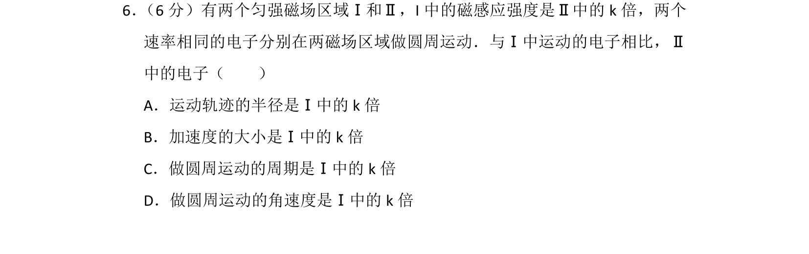
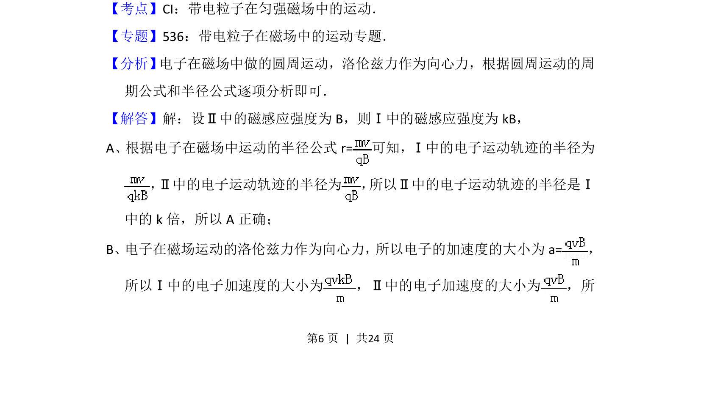
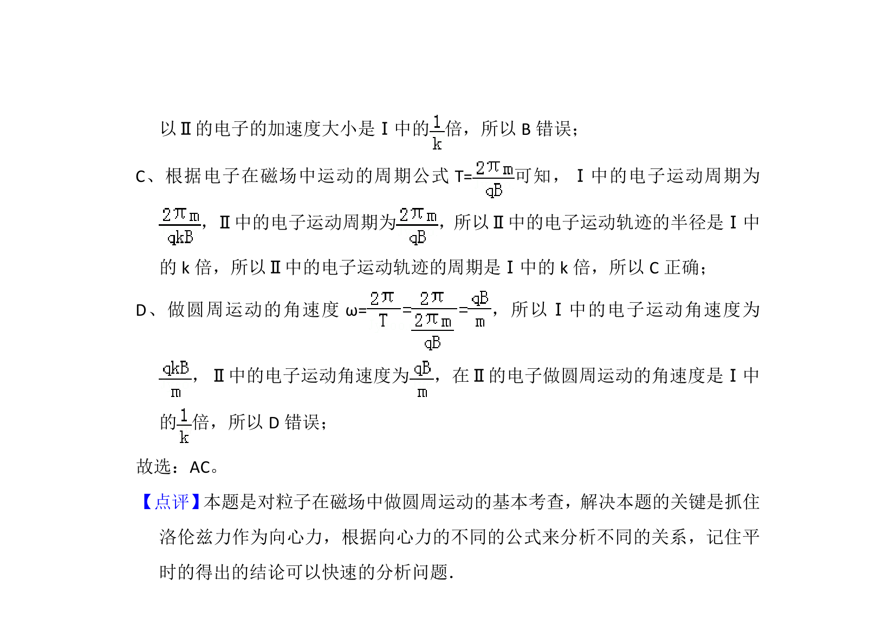

考点：带电粒子在匀强磁场中的运动 圆周运动半径 向心加速度 周期公式 角速度

电子在不同磁感应强度匀强磁场中做匀速圆周运动的半径、加速度、周期、角速度比较。


📄 原 PDF 第 6 页：
素材/真题/吉林/2008-2024·（吉林）物理高考真题/2015年高考物理试卷（新课标Ⅱ）（解析卷）.pdf
6． （6分）有两个匀强磁场区域Ⅰ和Ⅱ，I中的磁感应强度是Ⅱ中的k倍，两个 速率相同的电子分别在两磁场区域做圆周运动．与Ⅰ中运动的电子相比，Ⅱ 中的电子（ ） A．运动轨迹的半径是Ⅰ中的k倍 B．加速度的大小是Ⅰ中的k倍 C．做圆周运动的周期是Ⅰ中的k倍 D．做圆周运动的角速度是Ⅰ中的k倍
【考点】CI：带电粒子在匀强磁场中的运动．菁优网版权所有 【专题】536：带电粒子在磁场中的运动专题． 【分析】 电子在磁场中做的圆周运动，洛伦兹力作为向心力，根据圆周运动的周 期公式和半径公式逐项分析即可． 【解答】解：设Ⅱ中的磁感应强度为B，则Ⅰ中的磁感应强度为kB， A、根据电子在磁场中运动的半径公式r=可知，Ⅰ中的电子运动轨迹的半径为 ，Ⅱ中的电子运动轨迹的半径为 ， 所以Ⅱ中的电子运动轨迹的半径是Ⅰ 中的k倍，所以A正确； B、 电子在磁场运动的洛伦兹力作为向心力，所以电子的加速度的大小为a=， 所以Ⅰ中的电子加速度的大小为 ，Ⅱ中的电子加速度的大小为 ，所